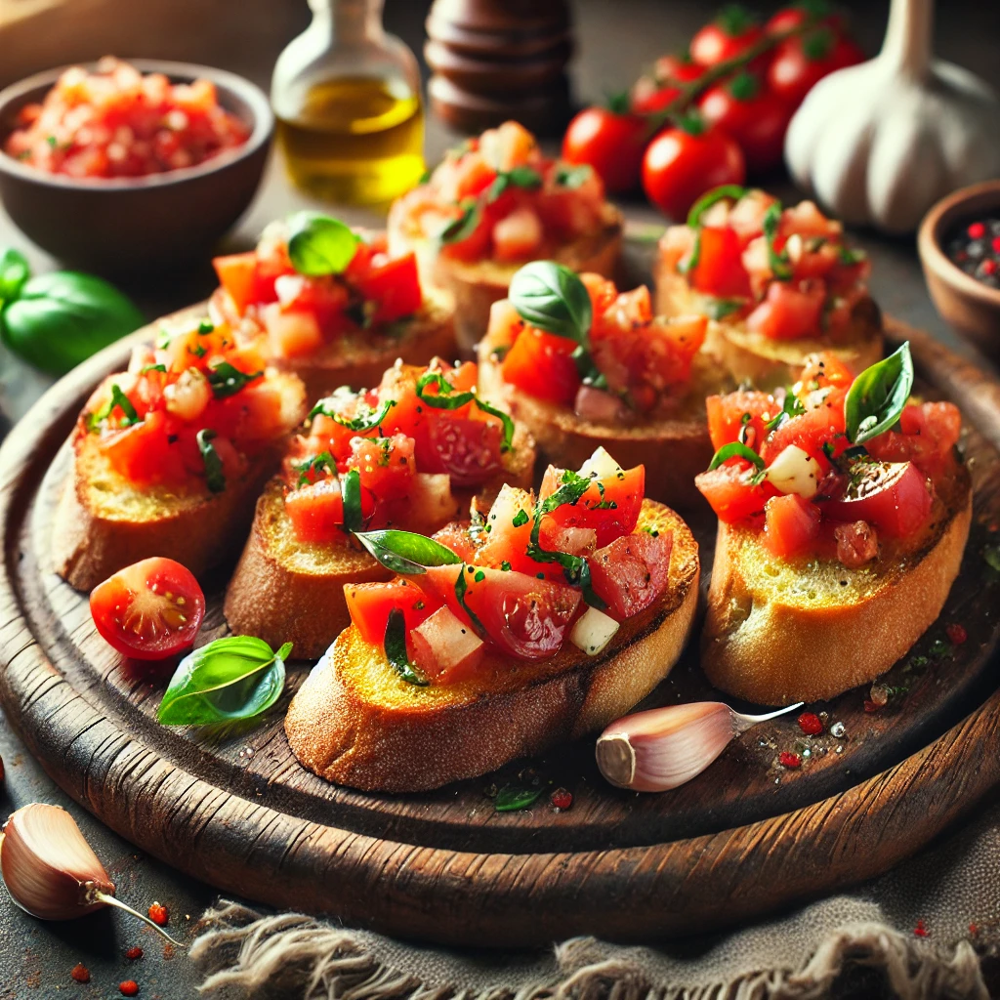
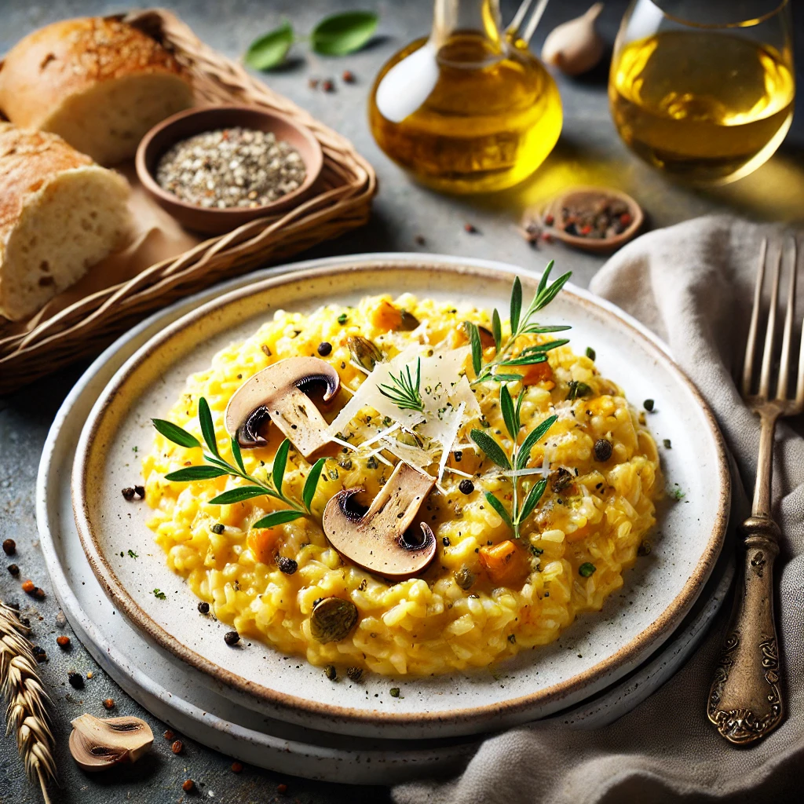
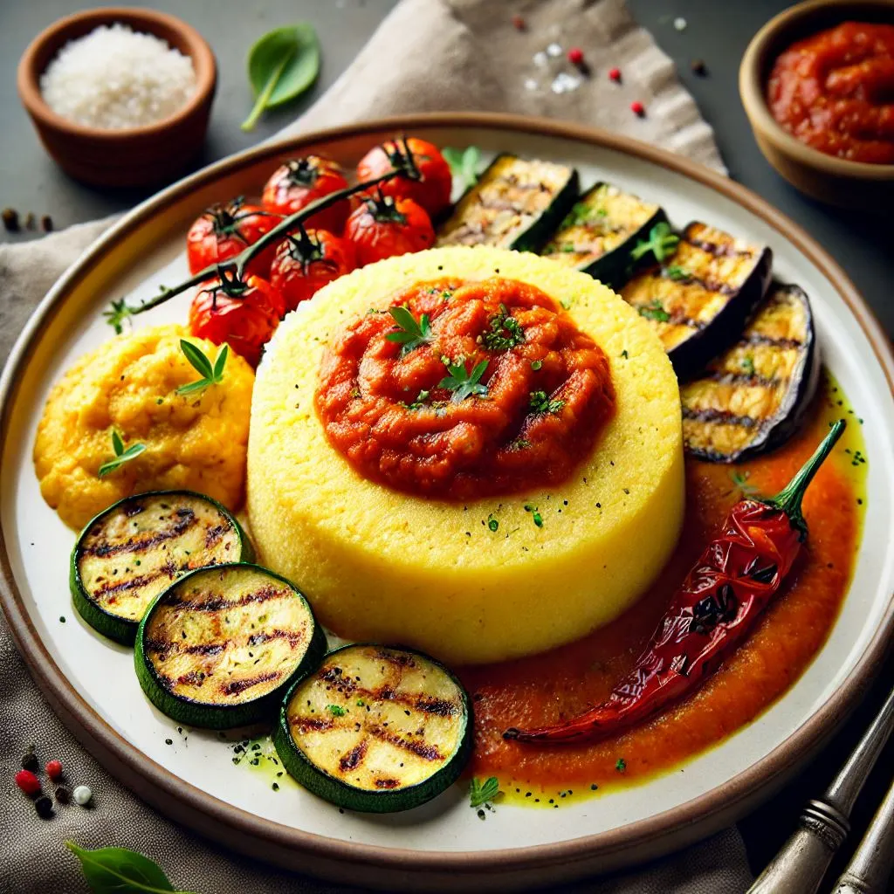
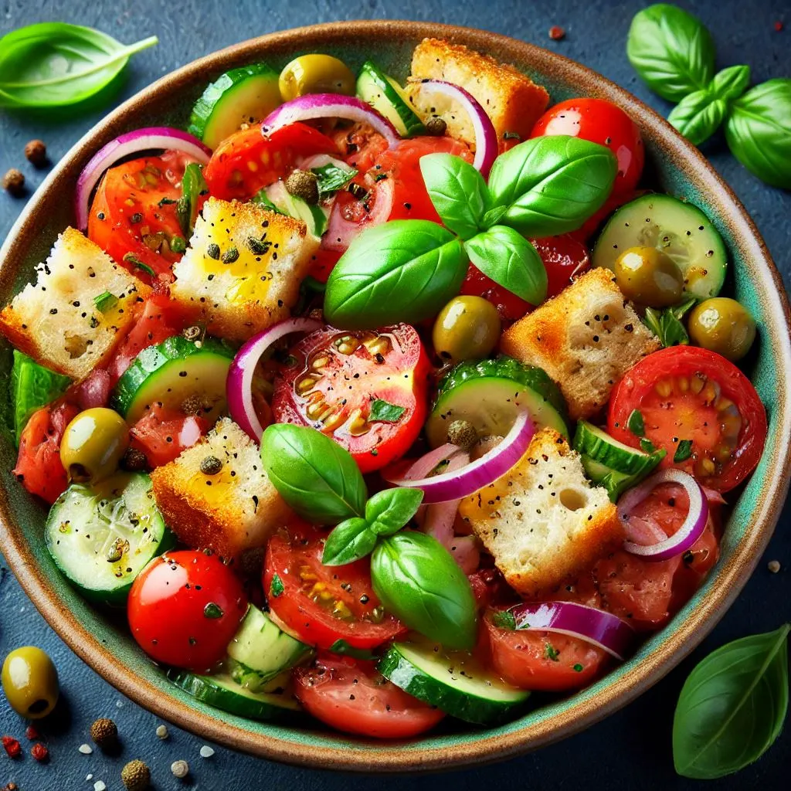
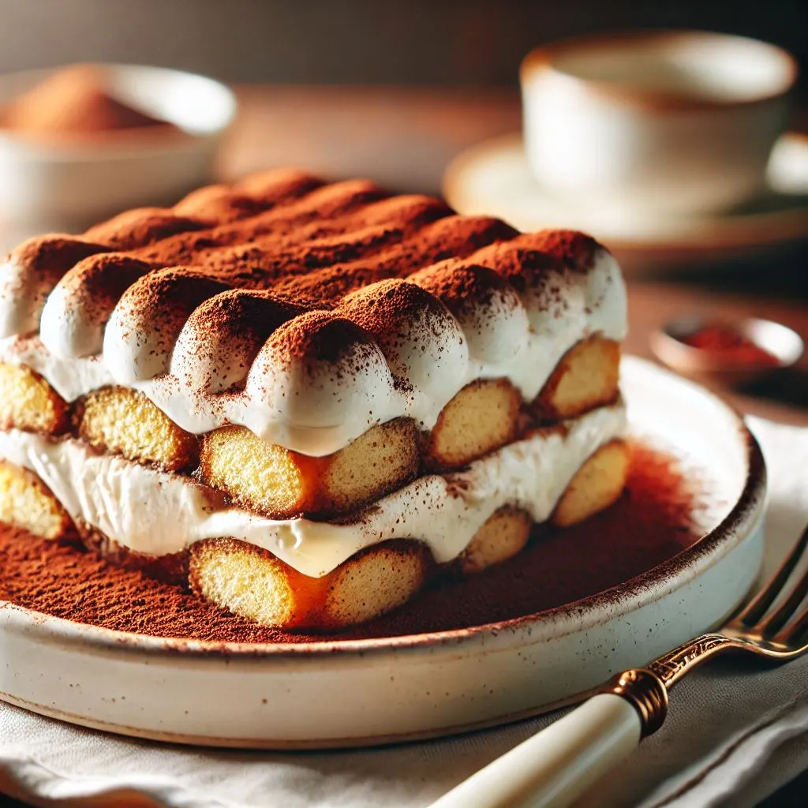

Pasta
Un classique italien, facile à préparer et délicieux.

Pizza
La pizza traditionnelle avec tomate, mozzarella et basilic.

Lasagna
Des couches de pâtes, de viande et de fromage fondant.

Bruschetta
Des tranches de pain grillé garnies de tomates fraîches et de basilic.

Risotto
Un plat crémeux à base de riz, souvent accompagné de champignons ou de fruits de mer.

Frittata
Une omelette italienne garnie de légumes, de fromage et parfois de viande.

Polenta
Un plat à base de semoule de maïs, souvent servi avec des sauces riches.

Panzanella
Une salade toscane à base de pain rassis, de tomates, de concombres et d'oignons.

Tiramisù
Un dessert italien classique à base de mascarpone, de café et de cacao.